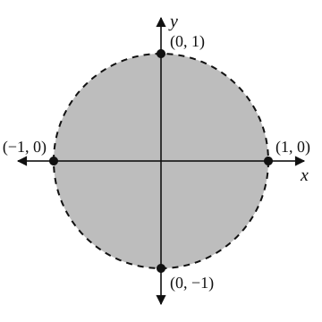

Lesson 15: Functions of Several Variables
Often, the value of a function depends on more than one variable or piece of information. You already have experience working with these. The surface area of a rectangular solid depends on three things. It is a function of three variables: the length \(l\), the width \(w\), and the height \(h\).
An Example
Find the surface area of a rectangular solid with a height of seven inches and a square base two inches by two inches.
The surface area is 64 square inches.
Now You Try!
Evaluate the below function for \(x = 4\), \(y = 4\), and \(z = 32\).
A Sample Homework Problem
The luminosity \(L\), the total power output in watts, of a star is given by the function below.
Here \(R\) is the radius of the star in meters, \(T\) is its effective surface temperature in kelvin, and \(\sigma\) is the Stefan–Boltzmann constant, approximately \(5.670374419 \times 10^{-8}\). Find the luminosity of a star with the following values.
- \(R = 6.77 \times 10^8\) meters
- \(T = 5600\) kelvin
Wait until the end to round. Then use two decimal places.
The luminosity is about \(3.21 \times 10^{26}\) watts.
A Sample Homework Problem
In a vacuum, a point charge \(q\) at the origin produces an electric potential \(V\), in volts, given by the function below.
Here \(\epsilon_0\) is a fundamental physical constant called the vacuum permittivity, approximately \(8.85419 \times 10^{-12}\) farad per meter, and the charge is \(q = 1.0 \times 10^{-19}\) coulomb, close to the charge of a single proton or electron. Consider the point with the coordinates below, in meters.
- \(x = 9.7 \times 10^{-9}\)
- \(y = 5.9 \times 10^{-9}\)
- \(z = 8.6 \times 10^{-9}\)
In volts, find the electric potential at this point. Wait until the end to round. Then use four decimal places.
First find the distance from the origin to the point.
Then substitute into the function, one factor at a time.
The electric potential is about 0.0631 volts.
An Example
Find and graph the domain of the function given below.
In this course we focus only on real numbers, so we must exclude values that result in the square root of a negative number. In a later course called Complex Analysis, you will study calculus with those numbers.
The square root is also in the denominator, so it cannot equal zero. So the expression under the square root must be positive.
The domain of the function is the interior of the unit circle: \(\{(x, y) \mid x^2 + y^2 < 1\}\). The circle itself is dashed in the graph, since it is not included.

A Sample Homework Problem
Is the point \((2, 5, -3)\) in the domain of the function below?
The natural logarithm \(\ln z\) is defined only when \(z > 0\). At this point \(z = -3\), so \(\ln(-3)\) is undefined.
No, the point \((2, 5, -3)\) is not in the domain of the function.